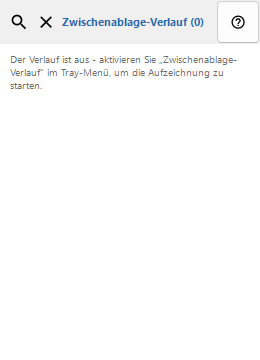
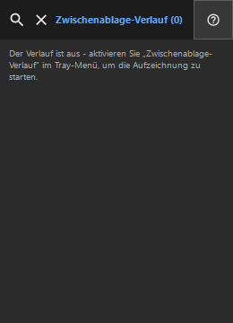

Zwischenablage-Verlauf
Zweck
Der Verlauf wird nur lokal gespeichert und mit Windows DPAPI für Ihr Konto verschlüsselt.


Reihenfolge
Lesen Sie die nummerierten Erklärungen, wählen Sie die benötigten Werte und fahren Sie mit dem Fensterbefehl fort.